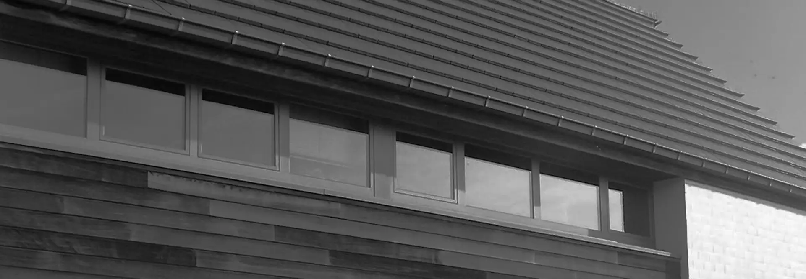
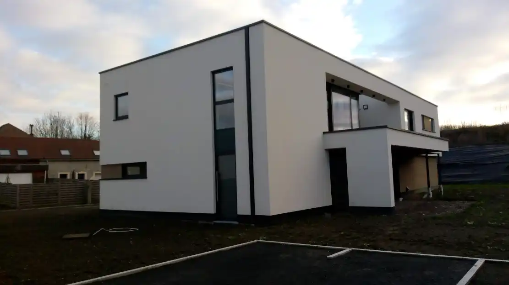
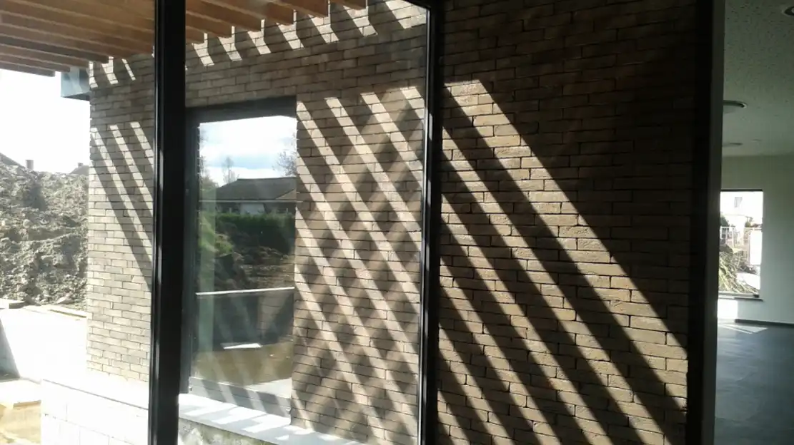
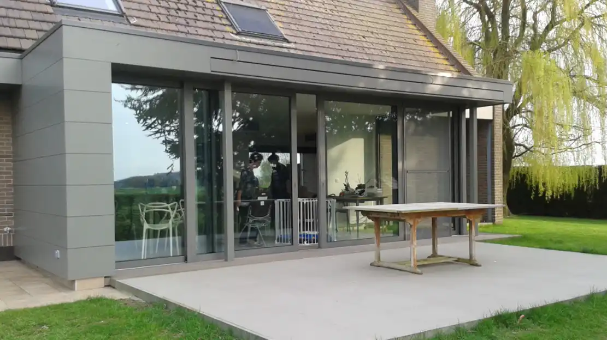
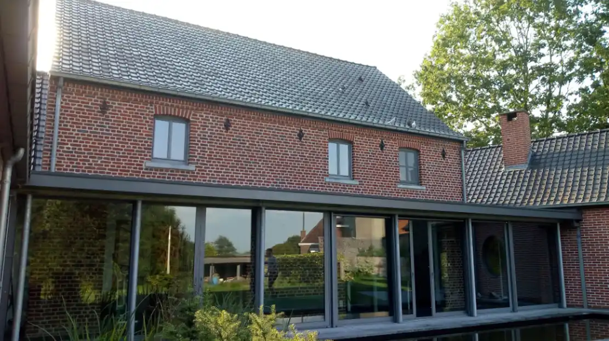
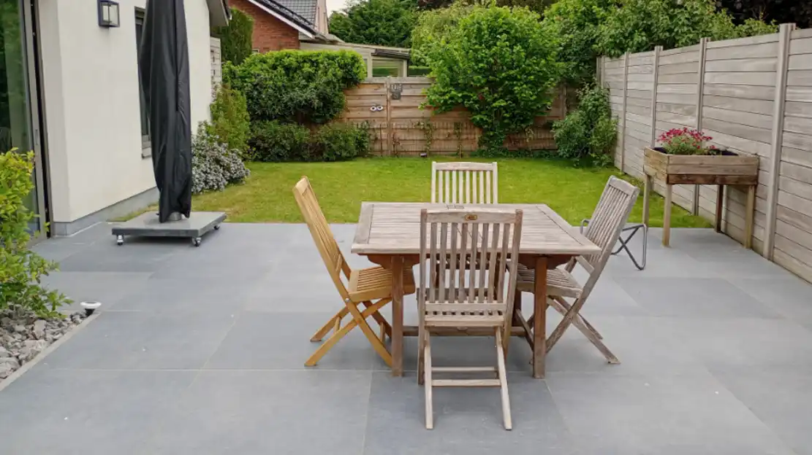

— Architecte indépendant

Architecte depuis 30 ans dans le Tournaisis, j'aime ma profession. Chaque jour est une nouvelle expérience artistique et relationnelle.
Les plus beaux projets architecturaux naissent d'une parfaite symbiose entre le maître d'ouvrage et son architecte.





Faire appel à un architecte permet de transformer vos besoins en un projet sur mesure, esthétique et fonctionnel. Il optimise votre budget, gère les aspects techniques et énergétiques, s'assure du respect des règles d'urbanisme et coordonne le chantier. Son intervention est par ailleurs souvent obligatoire pour obtenir un permis.
Mais son intervention est également à préconiser lorsqu'un permis d'urbanisme n'est pas utile. En effet, il a la vision à plus ou moins long terme des travaux à réaliser. Ce faisant, il évite au maître de l'ouvrage des dépenses inutiles à démonter des travaux mal exécutés ou mal conçus.